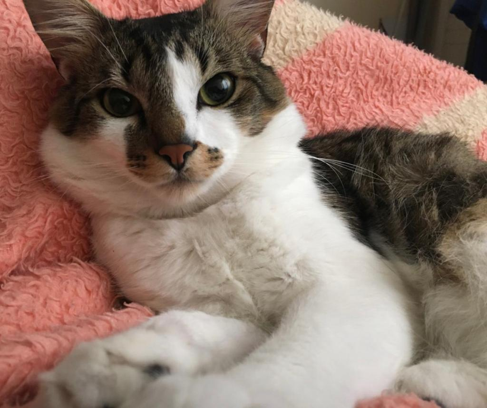

Mustapha
🐾 O primogênito

Olá! Meu nome é Mufasa Mustapha Aslan Falinha, sou o primogênito da família, cheguei aqui há pouco mais de 3 anos, fui um dos motivos para a união dos meus pais, com certeza! 🐾 Meu charme fala tudo sobre mim, sou Dinamarquês, nasci rico e sou o rei deste castelo, embora meu pai humano vive dizendo o contrário. Passe sua pata lá nos links superiores para você ver o que é beleza de verdade!😎 Ps: Eu tenho um irmão Peludo que se acha, a seguir veja mais sobre ele. Cuidado com as bolas de pelo! 😒
Peludo
🐾 O xodó do papai
🐾Oi! Eu sou o 🐾Simba Queninho Peludo!🐾 meu pai humano me resgatou de dentro de um bueiro quando eu tinha poucos dias de vida, sou o príncipe deste castelo, meus humanos me amam, meu pai é apaixonado por mim e diz que sou a cara do gato de botas do Sherek. Meu passatempo favorito é comer e dormir, afinal, essa beleza não se faz sozinha! 🐾 Eu tenho um irmão, depois que eu cheguei o trono dele caiu kkkkk conta pra ele não, ele tem ciúmes kkkk. Eu amo uma caixa de papelão, amolar as unhas é muito divertido!! Passe a pata nos links lá em cima para ver mais sobre mim e minha família, veja as nossas fotos!🐾 🐾